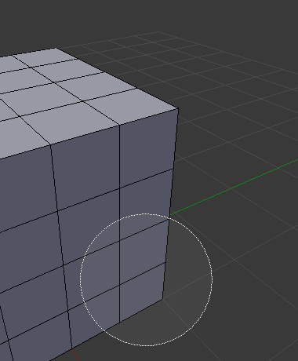
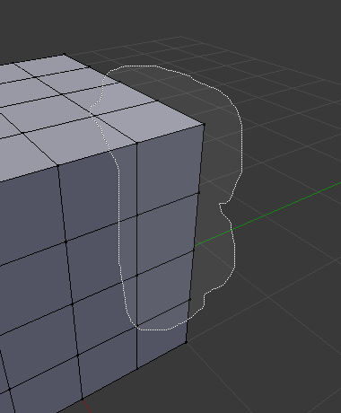
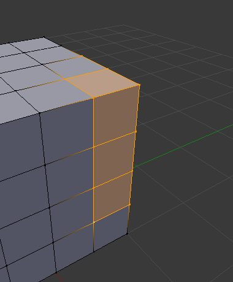

Giới Thiệu -- Introduction¶
There are many ways to select elements, and it depends on what Mesh Select Mode you are in as to what selection tools are available. First we will go through these modes and after that a look is taken at basic selection tools.
Chế Độ Chọn Lựa -- Selection Mode¶
Select Mode Header Widgets¶
Tham Chiếu -- Reference
| Chế Độ -- Mode: | Chế Độ Biên Soạn -- Edit Mode |
|---|---|
| Trình Đơn -- Menu: | |
| Phím Tắt -- Hotkey: | |
| Ctrl-Tab | |

Edit Mode selection buttons.
In Edit Mode there are three different selection modes. You can enter the different modes by selecting one of the three buttons in the header.
- Điểm Đỉnh -- Vertices
In this mode vertices are drawn as points.
Selected vertices are drawn in orange, unselected vertices in black, and the active or last selected vertex in white.
- Cạnh -- Edges
In this mode the vertices are not drawn.
Instead the selected edges are drawn in orange, unselected edges black, and the active or last selected edge in white.
- Bề Mặt -- Faces
In this mode the faces are drawn with a selection point in the middle which is used for selecting a face.
Selected faces and their selection point are drawn in orange, unselected faces are drawn in black, and the active or last selected face is highlighted in white.
When using these buttons, you can make use of modifier keys, see: Switching Select Mode.
Almost all tools are available in all three mesh selection modes. So you can Rotate, Scale, Extrude, etc. in all modes. Of course rotating and scaling a single vertex will not do anything useful (without setting the pivot point to another location), so some tools are more or less applicable in some modes.
See Fig. Selection modes. for examples of the different modes.
Multiple Selection Modes¶
By holding Shift-LMB when selecting a selection mode, you can enable multiple Selection Modes at once. This allows you to quickly select Vertices/Edges/Faces, without first having to switch modes.

Vertex mode example. |

Edge mode example. |

Face mode example. |

Mixed mode example. |
Switching Select Mode¶
When switching modes in an "ascendant" way (i.e. from simpler to more complex), from Vertices to Edges and from Edges to Faces, the selected parts will still be selected if they form a complete element in the new mode.
For example, if all four edges in a face are selected, switching from Edges mode to Faces mode will keep the face selected. All selected parts that do not form a complete set in the new mode will be unselected.
|
Edge mode, the initial selection. |

Switching to Face mode. |
Hence, switching in a "descendant" way (i.e. from more complex to simpler), all elements defining the "high-level" element (like a face) will be selected (the four vertices or edges of a quadrangle, for example).
Expanding/Contracting Selection¶
By holding Ctrl when selecting a higher selection mode, all elements touching the current selection will be added, even if the selection does not form a complete higher element.
Or contracting the selection when switching to a lower mode.
|
Vertex mode, the initial selection. |

Expanding to Edge mode. |
Limit Selection to Visible¶
If you are in solid, shaded, or textured viewport shading mode (not bounding box or wireframe), you will have a fourth button in the header that looks like a cube, just right of the select mode ones.
When enabled, this limits your ability to view and select vertices occluded by the objects geometry (as if the object was solid). This is done by the viewport with depth buffer clipping.

Limit Selection to Visible option is disabled. |

Limit Selection to Visible option is enabled. |
Selection Tools¶
The select menu in edit mode contains tools for selecting components. These are described in more detail in the following pages.
Lựa Chọn theo Đường Khoanh Ranh Giới -- Border Select¶
Enables a rectangular region for selection B.

Start. |

Selecting. |

Complete. |
In Fig. Start., Border Select has been activated and is indicated by showing a dotted cross-hair cursor. In Fig. Selecting. the selection region is being chosen by drawing a rectangle with the LMB. Finally, by releasing LMB the selection is complete; see Fig. Complete..
Lựa Chọn bằng Vòng Tròn -- Circle Select¶
Enables a circular-shaped region for selection C.

Start. |

Selecting. |

Dragging. |
{kind=link}
Fig. Circle Select example. is an example of selecting edges while in Edge Select Mode. As soon as an edge intersects the circle the edge becomes selected. The tool is interactive such that edges are selected while the circle region is being dragged with the LMB.
If you want to deselect elements, hold MMB and begin clicking or dragging again.
Ghi chú
If you are in bounding box or wireframe viewport shading mode, or when not enabled Limit Selection to Visible. For Faces select mode, the circle must intersect the face indicators usually represented by small pixel squares; one at the center of each face.
Lựa Chọn bằng Dây Thòng Lọng -- Lasso Select¶
To activate the tool use the Ctrl-LMB while dragging.

Selecting. |

Complete. |
{kind=link}
{kind=link}
{kind=link}
More Tools¶
- (De)select All A
- Select all or none of the mesh components.
- Inverse Ctrl-I
- Selects all geometries that are not selected, and deselect currently selected components.
- Ngẫu Nhiên -- Random
- Selects a random group of vertices, edges, or faces, based on a percentage value.
- More Ctrl-NumpadPlus
- Propagates selection by adding geometry that are adjacent to selected elements.
- Less Ctrl-NumpadMinus
- Deselects geometry that form the bounds of the current selection.